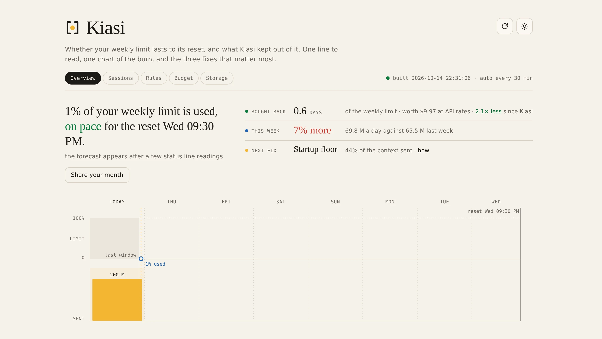

Your weekly limit is spent re‑reading.
Claude Code re-sends the whole conversation on every step, so one noisy test log is paid for again and again. Kiasi is a Claude Code plugin that keeps the noise out.
Every step re-sends 64,578 chars of this test log.
Every step re-sends everything before it.
Tokens re-read in one turn0
Kept out by Kiasi—
Each column is what that step sends again. Point at one.
- ① src/app.ts, read once
- 159,654
- ② pytest log
- 42,500
- ③ src/app.ts again
- 72,570
A model turn, not a measurement. The floor and 350 tokens of messages a step are the same on both sides; the three tool results are the cases under How it works, at 4 chars a token.
One number on purpose: the developer's own machine, context per request against its own days before Kiasi. Yours is the number that matters, and the dashboard measures it the same way. The benchmark shows where Kiasi helps and where it doesn't.
npm ls --all returns 3,016 lines. A few dozen reach Claude, and it names the file holding the rest.What 2.1× less does to a week.
The weekly limit runs out when a week of re-reading adds up to it. Pick how heavy your sessions are and replay the same week with and without Kiasi. It is a model, not a promise: the dashboard measures your own drop the next day.
One week, one limit
- Mon
- Tue
- Wed
- Thu
- Fri
- Sat
- Sun
Each day burns a fixed share of the limit, and with Kiasi it burns 2.1× less: the drop in context per request one machine measured over 30 days. The card it comes from.
Fixed rules, no model in the loop.
Kiasi hooks into Claude Code's tool calls. Every rule is a threshold, not a judgement, and the full text is always on disk.
❯ mcp__kiasi__run pytestexit 1 in 42.2s; 905 lines, 64578 chars; full output saved at …/outputs/run-20261011-103809.txt, search it with mcp__kiasi__searchtests/test_module_0.py::test_case_0 PASSED [ 0%]⋮ 14 more head lines[kiasi trimmed 880 of 905 lines here; full output saved at …/outputs/run-20261011-103809.txt]error lines from the trimmed part (2 of 2):tests/test_parser.py::test_unicode FAILEDE UnicodeDecodeError: invalid start byte⋮ 8 tail lines==== 1 failed, 899 passed in 42.17s ====
Claude Code alone would send a 10,000-char head and tail of this log, with no path to the rest. Kiasi sends 2,082 chars that include the failing test, and all 64,578 are on disk.
❯ Read src/app.ts · 29,029 chars, read earlier in this conversationkiasi: src/app.ts is unchanged since you read it earlier in this conversation, so its text is already in your context. Use that copy. If it is no longer in your context, repeat the same Read and it will go through.
Claude Code alone sends the whole file again: 29,029 chars. Kiasi sends 245. The skip is on Read, the tool Claude uses most, not only on shell commands.
step 50 warning: finish the item in progress and update the task file⋮step 60Kiasi paused this turn at 60 steps (8.1M tokens re-read). The remaining work goes to the task file .kiasi/checkpoints/task-1c8d2e9a.md. Claude will now ask how to go on: continue here, hand the rest to a subagent, or stop.
A turn that loops re-reads the whole conversation on every step. At 60 it stops, the task is on disk, and you choose what happens next. The same call failing three times in a row tells Claude to rethink instead of retrying.
Opus 5.5 │ shop-app │ ctx ██░░░░░░░░ 16% 31k (floor 22k) │ steps 14/60 │ turn 410k │ 5h ███░░░░░░░ 34% ⟳ 11:58am │ wk ████░░░░░░ 41% ⟳ Wed 9:58pm │ kiasi −1.8M ctx context this step, and the floor every step starts fromsteps this turn's steps, against the pause at 605h wk your plan's limits, and when each resetskiasi tokens Kiasi kept out this session
Rendered by Kiasi's own status line script from a sample session. The next day, the dashboard puts your whole week beside your days before Kiasi. See it below.
Same work. More week.
Beyond the three rules, the parts that keep a long session small and leave the full text where Claude can find it.
- A
Run, distill, fetch
A build, a test run, a web page or a big file goes through a tool that saves the full text and returns only the digest or the matching lines.
mcp__kiasi__run · distill · fetch · search - B
Status line and limits
One command adds your 5-hour and weekly limits, context size and step count to the status line, after whatever you already had.
/kiasi:limits setup - C
Compaction that keeps the task
At compaction your prompts and Claude's replies stay word for word. Old tool output goes. The task, edited files and failing commands come back.
session.compact - D
Paste manager
A paste over 4,000 chars is saved to disk and replaced by a path Claude can search. Over 40,000 is refused with the path to resend, so one stray log never fills the window.
UserPromptSubmit - E
Cleans up after itself
Saved outputs and pastes older than seven days are compressed, then dropped. The data folder stays small on its own, and a restore command brings a day back.
daily, at session start
Against Claude Code alone, not the raw output.
Claude Code already limits long tool output, so counting the raw output as the saving overstates it. Each row runs one tool output through Kiasi's real code and compares it with what Claude Code sends without Kiasi, under its documented limits. On 3 of the 9, Claude Code alone sends less, and those rows are here too.
Synthetic outputs shaped like real ones, measured in characters by scripts/benchmark.py. A paired run of the same tasks with and without Kiasi is next. Method and full table
The receipt is yours.
The benchmark is synthetic. Your dashboard is not: it reads your own transcripts, compares your days with Kiasi against your days before it, and lists every cut, skip and stop beside the file it saved.


Other people's numbers.
Each card is one machine's last 30 days, posted by its owner from the dashboard's Your month panel, with the plan and the kind of work beside it. Every card is read before it goes up.
Make this week's limit last.
Three lines and about a minute, in the terminal or VS Code. Nothing to build, nothing to sign up for, and your first before-and-after shows up the next day.
- Install the plugin
In a terminal, two lines. In the VS Code extension, one button, or
/pluginsin the prompt box. Both are beside this. - Restart, then one command
Run
/kiasi:limits setuponce. It writes the two settings Kiasi needs and adds your plan limits to the status line. The dashboard starts itself with every session at127.0.0.1:8787. - Come back tomorrow
The first before-and-after needs a day of sessions. The overview then sets your days with Kiasi beside your days before it.
# 1 · in Claude Code/plugin marketplace add raj-rangani/kiasi/plugin install kiasi@kiasi# 2 · restart Claude Code, then/kiasi:limits setup✓ settings written, status line set up✓ dashboard at http://127.0.0.1:8787
# 1 · the button above, or in the prompt box/plugins → Marketplaces → add raj-rangani/kiasi → Plugins → Install# 2 · "Restart Claude to apply plugin changes", then/kiasi:limits setup✓ settings written, status line set up✓ dashboard at http://127.0.0.1:8787
/plugin uninstall kiasi@kiasi and the two settings go back to what they were.What developers ask first.
Does Claude lose information it needs?
No text is thrown away. A cut output is saved in full with a path, and Claude is told where it is and how to search it. A skipped re-read points at the copy already in context. If Claude needs more, it reads the file by path.
How is this different from rtk or caveman?
rtk rewrites shell commands so their output is shorter, and caveman has Claude write shorter replies. JetBrains ran both through paired A/B tests on Claude Code and found that most of the advertised saving did not reach the bill (their rtk write-up).
Two differences. Kiasi works beyond the shell: the skip for an unchanged file is on Read, and the caps cover MCP results, web fetches and pastes. And Kiasi's benchmark is measured against what Claude Code alone sends, including the cases where Claude Code alone sends less. Kiasi has not been through a paired test like JetBrains' yet; that is the next benchmark.
Does anything leave my machine?
No. Kiasi is Python standard library with no dependencies and makes no network calls. Reports hold counts and sizes, never what you typed. The dashboard listens on 127.0.0.1 only and refuses other host names.
Does it slow Claude Code down?
Each hook runs in milliseconds on the tool output it is given. Long commands are the ones that get faster, because a 3,000-line log no longer rides along on every later step of the turn.
What does it change in my settings?
Two keys in ~/.claude/settings.json: the compaction window at 200k and the pruner switch, plus a status line entry added after whatever you had. /plugin uninstall kiasi@kiasi puts both back.
Which plans and versions does it need?
Claude Code 2.1.283 or newer and Python 3.8 or newer. Any plan: the weekly-limit readout works on Pro and Max, and the context savings apply to API billing too.
How do I know it worked for me?
Open the dashboard the next day. It compares your context per request with your own days before Kiasi, read from your transcripts. The Your month panel makes a card you can post on this page.